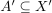
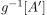
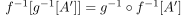
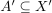
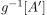
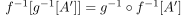

Komposition stetiger Abbildungen
1. Satz

2. Beweis
Sei  eine offene Menge, dann ist nach Annahme auch  offen. Daraus folgt, dass  ebenfalls offen ist:wa
Sei  eine offene Menge, dann ist nach Annahme auch  offen. Daraus folgt, dass  ebenfalls offen ist:wa